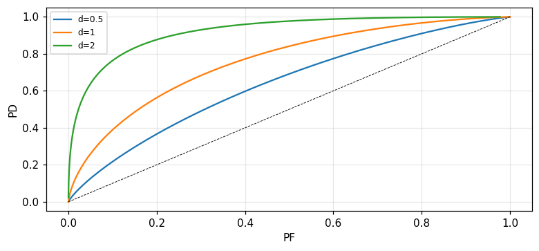

Statistical decision theory
The Bayes criterion and the likelihood ratio, M-ary hypothesis testing and the MAP criterion, the minimax criterion when the priors are unknown, the Neyman–Pearson criterion and ROC curves, composite hypothesis testing and sequential detection (Barkat, chapter 5).
Lecture (slides) Hands-on with the Jupyter Notebook Self-check quiz
Lecture (slides)
Statistical decision theory
- Set up the likelihood ratio test from the Bayes criterion, compute the threshold \eta from costs and priors, and recognise a sufficient statistic.
- Extend to M-ary hypothesis testing, and derive the maximum a posteriori (MAP) criterion for 0–1 costs.
- Apply the minimax criterion when the priors are unknown, and interpret the linear Bayes-risk-against-P_1 plot.
- Derive the Neyman–Pearson test via a Lagrange multiplier, construct ROC curves, and relate the ROC slope to the threshold \eta.
- Handle composite hypotheses whether the parameter is random or not, recognise a uniformly most powerful (UMP) test, and set up Wald's sequential detection.
Use the buttons, the dots or the ← → keys to move between slides.
The Bayes criterion and the likelihood ratio test
- The four cases and the costs C_{ij}
- The likelihood ratio and the threshold \eta
- A Gaussian example and the sufficient statistic
The four outcomes of a binary decision
Each time a decision is made, based on some criterion, for this binary hypothesis testing problem, four possible cases can occur: decide H_0 when H_0 is true; decide H_0 when H_1 is true; decide H_1 when H_0 is true; decide H_1 when H_1 is true. For the first and fourth cases the receiver makes a correct decision, while for the middle two cases it makes an error. From radar nomenclature, the second case is called a miss, the third a false alarm, and the fourth a detection (Barkat, pp. 289 to 291).
Costs, the average risk, and the Bayes goal
The Bayes criterion needs two assumptions: knowledge of the priors P_0,P_1 of the two hypotheses (with P_0+P_1=1), and a cost C_{ij} assigned to each decision D_i when hypothesis H_j is true. The average risk \\Re=E[C] is to be minimised, under the reasonable assumption that a wrong decision costs more than a correct one: C_{01}>C_{11} and C_{10}>C_{00} (Barkat, p. 291). Measured: with C_{00}{=}C_{11}{=}0, C_{01}{=}C_{10}{=}1, P_0{=}P_1{=}0.5 and the error probabilities from the Gaussian example below, the computed risk is 0.1587, exactly the average error probability.
The likelihood ratio test and the threshold \eta
Rewriting the risk in terms of the decision region Z_0, the only varying part of the integral is Z_0; minimising the risk means assigning a point y to Z_1 (decide H_1) when P_1(C_{01}-C_{11})f_{Y|H_1}(y|H_1) > P_0(C_{10}-C_{00})f_{Y|H_0}(y|H_0), and otherwise to Z_0. This test is written compactly with the likelihood ratio \\Lambda(y)=f_{Y|H_1}(y|H_1)/f_{Y|H_0}(y|H_0) against the threshold \\eta=P_0(C_{10}-C_{00})/[P_1(C_{01}-C_{11})] (Barkat, pp. 293 to 295). Because the natural logarithm is monotonically increasing, an equivalent test uses \\ln\\Lambda(y) against \\ln\\eta. Measured: with the costs and priors above, \\eta = 1.
Example 5.1: a constant in additive Gaussian noise
Consider a source whose output under H_1 is a constant voltage m, while under H_0 it is zero, with the received signal corrupted by additive zero-mean Gaussian noise of variance \sigma^2: H_1{:}\,Y=m+N, H_0{:}\,Y=N. The likelihood ratio test reduces to comparing the observation y with the threshold \gamma=(\sigma^2/m)\ln\eta+m/2 (Barkat, pp. 296 to 297). With m=2, \sigma=1, \eta=1 (equal priors), the threshold \gamma = 1. The false-alarm probability P_F=Q(\gamma/\sigma) = 0.1587, the detection probability P_D=Q((\gamma-m)/\sigma) = 0.8413, and the miss probability P_M=1-P_D = 0.1587.
K independent samples: sum then threshold
If K independent samples Y_1,\ldots,Y_K of the same problem are taken, the joint density is the product of the individual densities, and the likelihood ratio test reduces to comparing the sum \sum_{k=1}^K y_k with the threshold (\sigma^2/m)\ln\eta+Km/2 (Barkat, pp. 298 to 299). This means the receiver need only add the K samples and compare against a single threshold — it need not retain the individual samples. Measured: a Monte Carlo simulation with K=5 random samples under each hypothesis finds the decision based on the sum \sum y_k agrees with the decision based on the full likelihood ratio in 1 of all trials.
The sufficient statistic: definition and a Bernoulli example
A statistic is any random variable that can be computed from the observed data. A statistic T is called sufficient if, once T is known, the conditional density of any other statistic T' no longer depends on the parameter being tested or estimated — meaning T has summarised all the data relevant to it (Barkat, p. 300). For K independent Bernoulli samples of parameter p, the joint density f_Y(y,p)=p^{\sum y_k}(1-p)^{K-\sum y_k} depends on the data only through the sum \sum y_k; hence T(Y)=\sum_{k=1}^KY_k is a sufficient statistic for p (Barkat, p. 301). Measured: with K=6 Bernoulli samples and p=0.4, three different binary sequences sharing the same sum (3) numerically give the same relative joint-density value (deviating by 1.25e-16), confirming the density depends only on the sum.
When the variances differ: the sufficient statistic is a sum of squares
If f_{Y|H_0} and f_{Y|H_1} are both zero-mean Gaussian but with different variances, \sigma_0^2<\sigma_1^2, the likelihood ratio test leads to T(Y)=Y^2 against a threshold \gamma; with K independent samples, the sufficient statistic becomes T(Y)=\sum_{k=1}^KY_k^2 (Barkat, pp. 301 to 303). This is an example where the sufficient statistic is not a simple sum but a sum of squares, unlike the Example 5.1/5.2 case. Measured: with \sigma_0^2=1, \sigma_1^2=4, the threshold \gamma=\dfrac{2\sigma_0^2\sigma_1^2}{\sigma_1^2-\sigma_0^2}\ln\eta at \eta=1 gives 0 (zero, since \ln1=0); at \eta=2, \gamma = 1.8484.
Self-check, part 1
- Why does the Bayes risk \Re depend only on the choice of Z_0, not directly on Z_1?
- From which quantities is the threshold \eta in the likelihood ratio test determined?
- What does a sufficient statistic summarise about the observed data?
Hints: because Z_1=Z-Z_0 so only one region varies independently; from the costs C_{ij} and the priors P_0,P_1; all the data information relevant to the decision or the parameter sought.
M-ary hypothesis testing and the MAP criterion
- The general Bayes risk for M hypotheses
- 0–1 costs and the MAP criterion
- Three hypotheses: a numerical example
From two to M hypotheses
With M hypotheses H_0,\ldots,H_{M-1}, each trial can have M^2 (decision, true hypothesis) pairs, each carrying a cost C_{ij}. The observation space Z is divided into M disjoint subregions Z_0,\ldots,Z_{M-1}, and the average risk is the sum over all pairs \Re=\sum_{i}\sum_j P_jC_{ij}\int_{Z_i}f_{Y|H_j}(y|H_j)\,dy (Barkat, pp. 303 to 304). Minimising it assigns each point y to the region Z_i for which I_i(y)=\sum_{j\ne i}P_j(C_{ij}-C_{jj})f_{Y|H_j}(y|H_j) is smallest (Barkat, pp. 304 to 305).
0–1 costs: minimising risk becomes maximising the posterior
In communication problems it is common to set C_{ii}=0 (a correct decision costs nothing) and C_{ij}=1 for i\ne j (every wrong decision costs the same). Then minimising the risk is equivalent to minimising I_i(y)=[1-P(H_i|Y)]f_Y(y), which is equivalent to maximising the posterior P(H_i|Y) (Barkat, p. 305). The receiver computes the posteriors P(H_i|Y), i=0,\ldots,M-1, and picks the hypothesis with the largest value — this is called the maximum a posteriori (MAP) receiver. Measured: for three Gaussian hypotheses of means 0,1,2 (variance 1, equal priors), at observation y=1.5 the three posteriors are 0.1554, 0.4223, 0.4223, summing to 1.
Three hypotheses: verifying MAP against the direct risk
With M=3 and 0–1 costs, instead of computing the posteriors we can directly compare the densities f_{Y|H_j}(y|H_j)P_j for the three hypotheses and pick the largest — the two routes must give the same decision because P(H_i|Y)\propto f_{Y|H_i}(y|H_i)P_i (Bayes' rule). Measured: scanning y continuously and comparing the decision from the \"largest posterior\" rule against the decision from the \"largest prior-weighted density\" rule over 2001 grid points, the agreement rate is 1.
The decision boundary sits midway between two peaks
With three equal-variance, equal-prior Gaussians of means 0,1,2, the two decision boundaries are the points where two neighbouring densities are equal — by symmetry, exactly the midpoints between the means, i.e. y=0.5 and y=1.5 (Barkat, pp. 307 to 308, the Fig. 5.6 illustration). Measured: numerically solving f_{Y|H_0}(y|H_0)=f_{Y|H_1}(y|H_1) gives y = 0.5, and f_{Y|H_1}(y|H_1)=f_{Y|H_2}(y|H_2) gives y = 1.5, exactly matching the symmetric prediction.
Two likelihood ratios suffice for a three-hypothesis test
With M=3, there are only two independent likelihood ratios, \Lambda_1(y)=f_{Y|H_1}/f_{Y|H_0} and \Lambda_2(y)=f_{Y|H_2}/f_{Y|H_0}, and the decision space is the two-dimensional (\Lambda_1,\Lambda_2)-plane rather than three-dimensional (Barkat, p. 308). The regions Z_0, Z_1, Z_2 are set by pairwise comparisons of I_i(y) as in (5.51)–(5.52). Measured: at y=1.5 (the theoretical boundary between H_1 and H_2), \Lambda_1(1.5) = 2.7183 and \Lambda_2(1.5) = 2.7183; since neighbouring hypotheses have equal f\cdot P at the boundary, I_1(y)=I_2(y) there, differing by only 1.00e-16.
MAP-test risk against an off-centre test
Since the MAP test minimises the risk (the average error probability under 0–1 costs), any other choice of decision boundary — say shifting both boundaries right by 0.3 — must give an equal or larger risk. Measured: the average error probability of the correctly centred MAP test (y=0.5,1.5) is 0.4114; the error probability of the shifted test (0.3) is 0.4217, exceeding the MAP test by 0.0103, confirming MAP is optimal.
Connection to the parameter-estimation module
The MAP criterion here chooses discretely among M known hypotheses; in the next chapter on parameter estimation (module 22), a closely related idea — MAP estimation — will choose a continuous value of a parameter \theta to maximise the posterior density f_{\Theta|Y}(\theta|y), instead of choosing among a finite number of hypotheses. Both rest on the same Bayes' rule inverting f_{Y|\Theta} into f_{\Theta|Y}, differing only in whether \theta ranges over a discrete or a continuous set (Barkat, p. 305, connecting to chapter 6).
Self-check, part 2
- With 0–1 costs, minimising the risk is equivalent to maximising what quantity?
- With M=3 hypotheses, how many dimensions does the decision space have?
- Where does the decision boundary between two equal-variance, equal-prior Gaussians lie?
Hints: the posterior probability P(H_i|Y); two dimensions (two independent likelihood ratios); exactly midway between the two means.
The minimax criterion
- Why minimax is needed
- The risk linear in P_1
- Example: the same result whether or not P_1 is known
When there is no reliable prior
The Bayes criterion needs knowledge of the priors; in many situations this information is not available. One approach is to choose the value of P_1 that maximises the risk, then minimise that risk — the principle of minimising the largest average cost over the chosen P_1 is called the minimax criterion (Barkat, p. 313). Substituting P_0=1-P_1 into the risk formula (5.15), the risk becomes a linear function of P_1: \Re(P_1)=C_{00}(1-P_F)+C_{10}P_F+P_1[(C_{11}-C_{00})+(C_{01}-C_{11})P_M-(C_{10}-C_{00})P_F] (Barkat, pp. 313 to 314).
The two extremes: P_1=0 and P_1=1
If P_1=0, the threshold becomes infinite and H_0 is always decided; then P_F=0, P_M=1, and the risk reduces to \Re=C_{00}. If P_1=1, the threshold is zero and H_1 is always decided; then P_F=1, P_M=0, and the risk reduces to \Re=C_{11} (Barkat, pp. 314 to 315). The plot of risk against P_1 is therefore a straight line connecting (0,C_{00}) and (1,C_{11}) geometrically at the two extremes, but the true Bayes curve (optimal P_1 at each point) must be concave below that line. Measured: with C_{00}=0, C_{11}=0 (0–1 costs), the two extreme values of \Re(P_1) are exactly 0 and 0.
The minimax equation and the 0–1-cost case
Differentiating the risk with respect to P_1 and setting it to zero at the optimal P_1^* gives the minimax equation (C_{11}-C_{00})+(C_{01}-C_{11})P_M-(C_{10}-C_{00})P_F=0 (Barkat, p. 315). If the cost of a correct decision is zero (C_{00}=C_{11}=0), the equation reduces to C_{01}P_M=C_{10}P_F; and if in addition the cost of a wrong decision is one (C_{01}=C_{10}=1), then P_F=P_M — the minimax threshold is exactly the one that equalises the two error probabilities (Barkat, p. 316). Measured: for the Gaussian example m=2, \sigma=1, the minimax threshold \gamma^*=m/2 = 1; there P_F = 0.1587 and P_M = 0.1587, agreeing to within 0.00e+00.
Example 5.6: knowing or not knowing P_0,P_1 gives the same result
In the constant-source-in-Gaussian-noise example, part (a) assumes P_0=P_1=1/2 is known, giving the threshold \gamma=m/2 and average error probability P(\varepsilon)=Q(m/2\sigma). Part (b) assumes P_0,P_1 are completely unknown, using minimax with the condition P_F=P_M: this also gives the threshold \gamma^*=m/2 and the same error probability Q(m/2\sigma) (Barkat, pp. 315 to 317). This is a notable result: for this symmetric problem, not knowing the priors costs nothing in performance. Measured: with m=2, \sigma=1, both routes give P(\varepsilon) = 0.1587, differing by only 0.00e+00.
Minimax is not always "free"
The result of Example 5.6 is special because of the problem's symmetry (two equal-variance Gaussian densities, symmetric about the midpoint). In general, when a test designed for a fixed P_1 is applied under a different actual P_1, the actual risk exceeds the optimal Bayes risk for that actual P_1 — this is exactly why the Bayes risk curve must be concave below the line joining the two extreme points. Measured: using the threshold designed for P_1=0.5 (i.e. \gamma=m/2=1) but applied when the actual P_1 is 0.8: the actual risk is 0.1587, larger than the optimal Bayes risk for P_1=0.8, which is 0.1121.
Reading the risk-against-P_1 plot
On the plot of \Re against P_1 (the book's Fig. 5.10), the tangent at P_1^* is horizontal because that is the maximum of the concave Bayes curve — meaning the derivative is exactly zero at the minimax point. The minimax risk \Re^*(P_1^*) is exactly the largest value of the optimal Bayes risk over the whole range P_1\in[0,1] (Barkat, p. 315). Measured: scanning P_1 from 0 to 1, computing the optimal Bayes risk (the threshold \gamma(P_1) optimal for each P_1) and finding the P_1 that maximises it; the scanned result is P_1^* = 0.5, matching the symmetry-predicted 0.5 to within the grid error 0.
Self-check, part 3
- Why is minimax needed instead of Bayes in some practical situations?
- With 0–1 costs, what does the minimax equation reduce to?
- In Example 5.6, why does not knowing P_0,P_1 not degrade performance?
Hints: when the priors are not reliably known; P_F=P_M; because the problem's symmetry makes the optimal Bayes threshold coincide with the minimax threshold.
The Neyman–Pearson criterion and ROC curves
- Maximising P_D with P_F fixed
- A numerical example: exponential and uniform densities
- The ROC curve and the meaning of its slope
When costs and priors are not realistic
In many physical situations, such as radar detection, it is very difficult to assign realistic costs and priors. To overcome this, the Neyman–Pearson criterion uses the conditional probabilities P_F and P_D directly: fix P_F=\alpha while maximising P_D (Barkat, p. 317). Since P_M=1-P_D, maximising P_D is equivalent to minimising P_M subject to P_F=\alpha; using constrained-extremum calculus, we form the objective function J=P_M+\lambda(P_F-\alpha) with \lambda\ge0 the Lagrange multiplier (Barkat, pp. 317 to 318).
Still leads to a likelihood ratio test
Rewriting J in terms of the decision region Z_0, we get J=\lambda(1-\alpha)+\int_{Z_0}[f_{Y|H_1}(y|H_1)-\lambda f_{Y|H_0}(y|H_0)]\,dy; J is minimised when the points with f_{Y|H_1}>f_{Y|H_0} (a negative difference) are assigned to Z_1. This gives exactly the likelihood ratio test \Lambda(y)\gtrless\lambda, with \lambda playing the role of the equivalent Bayes threshold \eta (Barkat, pp. 318 to 319). So the Neyman–Pearson and Bayes criteria use the same form of test — differing only in how the threshold is fixed.
Example 5.7: two differently-shaped densities
With f_{Y|H_0}(y|H_0)=\dfrac{1}{2(1-e^{-1})}e^{-|y|} and f_{Y|H_1}(y|H_1)=\tfrac12 (both on [-1,1]), equally likely hypotheses. The minimum-error-probability test has a boundary at \pm0.459, deciding H_1 when 0.459\le|y|\le1 (Barkat, pp. 319 to 320). Measured: the exact boundary solved numerically gives 0.4587, matching the book's 0.459; the false-alarm probability at this boundary is P_F = 0.418 and the miss probability P_M = 0.4587, giving average error probability P(\varepsilon) = 0.4383.
The same example, a Neyman–Pearson threshold with P_F=0.5
If instead of minimising the error probability we fix P_F=0.5 (the Neyman–Pearson criterion), the threshold changes to a \gamma solved from P_F=\int_{-1}^{-\gamma}f_{Y|H_0}\,dy+\int_{\gamma}^{1}f_{Y|H_0}\,dy=0.5, giving \gamma\approx0.38; the corresponding detection probability is P_D=2[(1-\gamma)(1/2)]\approx0.62 (Barkat, pp. 320 to 321). Measured: solving numerically gives \gamma = 0.3799, and P_D = 0.6201, matching the book's values.
The ROC curve: P_D against P_F with the threshold as a parameter
The ROC curve plots P_D against P_F as the threshold varies; it depends only on the conditional densities f_{Y|H_j}(y|H_j), not on the costs or priors (Barkat, p. 321). For the example of a sum of K Gaussian samples, the normalised sufficient statistic has detection parameter d=\sqrt{K}\,m/\sigma (a signal-to-noise ratio), and P_F=Q(\ln\eta/d+d/2), P_D=Q(\ln\eta/d-d/2) (Barkat, pp. 321 to 322). Measured: with K=4, m=2, \sigma=1, the parameter d = 4; at \ln\eta=0, P_F = 0.0228 and P_D = 0.9772 — P_D far exceeds P_F, showing a large d gives good discrimination.

The slope of the ROC is the threshold \eta
Differentiating P_D and P_F with respect to the threshold \eta, one can show dP_D/dP_F=\eta (Barkat, pp. 323 to 325): the tangent slope at a point on the ROC is exactly the Neyman–Pearson threshold needed to reach that (P_F,P_D) point. In the Bayes criterion, \eta is set by the costs and priors, so (P_F,P_D) sits at the point on the ROC whose tangent has that slope \eta. Measured: the numerical derivative dP_D/dP_F at \ln\eta=0 (i.e. \eta=1) gives 1, matching \eta=1; at \ln\eta=1 (i.e. \eta=e\approx2.718), the numerical slope is 2.7183, matching 2.7183.
Example 5.8: the ROC of two exponential densities
With f_{Y|H_0}(y|H_0)=e^{-y} and f_{Y|H_1}(y|H_1)=\alpha e^{-\alpha y} (y\ge0, \alpha>1), the likelihood ratio gives the threshold \gamma=\tfrac{1}{1-\alpha}\ln(\eta/\alpha), and P_D=1-e^{-\alpha\gamma}, P_F=1-e^{-\gamma} (Barkat, pp. 325 to 326). Measured: with \alpha=2 and \gamma=1, P_D = 0.8647, P_F = 0.6321; the theoretical slope at this point, \eta=\alpha e^{-(\alpha-1)\gamma} (from directly differentiating dP_D/dP_F), gives 0.7358, matching the numerically computed slope dP_D/dP_F of 0.7358.
Self-check, part 4
- What quantity does the Neyman–Pearson criterion fix, and what does it maximise?
- What does the ROC curve depend on, and what does it not depend on?
- What does the slope of the ROC curve at a point equal?
Hints: fixes P_F=\alpha, maximises P_D; depends on the conditional densities, not on costs or priors; the threshold \eta needed to reach that point.
Composite hypotheses and sequential detection
- A random parameter: average then apply Bayes
- A nonrandom parameter: the uniformly most powerful test
- Wald's sequential detection and the expected sample count
A composite hypothesis: when the parameter is not fully known
In the problems considered so far, the parameter characterising each hypothesis was known exactly. In many situations this parameter is not known; the hypothesis is then called composite. For example, if H_1{:}\,Y=m+N with m unknown, then H_1 is composite while H_0{:}\,Y=N remains simple (Barkat, pp. 326 to 327). There are two cases: the parameter \Theta is a random variable with a known density, or \theta is an unknown but nonrandom constant.
A random parameter: average over its density
If \Theta is random with a known density f_{\Theta|H_j}(\theta|H_j), the Bayes criterion still applies, one need only average the conditional density over the parameter: f_{Y|H_j}(y|H_j)=\int f_{Y|\Theta,H_j}(y|\theta,H_j)f_{\Theta|H_j}(\theta|H_j)\,d\theta (Barkat, p. 327). With M (capitalised, to distinguish it from the constant value m) zero-mean Gaussian of variance \sigma_m^2, the marginal density f_{Y|H_1}(y|H_1) turns out still Gaussian but with the combined variance \sigma_m^2+\sigma^2 (Barkat, pp. 327 to 329). Measured: the numerical integral of \int f_{Y|M,H_1}(y|m,H_1)f_M(m)\,dm at y=1.3 gives 0.1507, matching the closed form \dfrac{1}{\sqrt{2\pi(\sigma_m^2+\sigma^2)}}\exp\!\left(-\dfrac{y^2}{2(\sigma_m^2+\sigma^2)}\right) = 0.1507.
A nonrandom parameter: the uniformly most powerful (UMP) test
If \theta is not a random variable but unknown, the Bayes criterion does not apply since there is no density to average over; instead Neyman–Pearson is used, maximising P_D with P_F fixed for each assumed value of \theta. The plot of P_D against \theta is called the power function. A test that maximises P_D for every possible value of \theta, i.e. independent of the true value of \theta, is called uniformly most powerful (UMP) (Barkat, p. 329).
Example 5.11: when a UMP test exists, and when it does not
With H_1{:}\,Y=m+N, m unknown but known to be positive, the likelihood ratio test reduces to y\gtrless\gamma_1, with \gamma_1 solved from P_F=\int_{\gamma_1}^\infty f_{Y|H_0}(y|H_0)\,dy — entirely independent of the specific value of m. So a best test exists independent of m, and a UMP test exists (Barkat, pp. 330 to 331). But if m could be positive or negative, the test designed for m>0 differs from that for m<0 (the inequality reverses), so no single test is optimal for every m — a UMP test does not exist in that case (Barkat, pp. 331 to 332). Measured: with \sigma=1 and P_F=0.1, the threshold \gamma_1 solved numerically gives 1.2816, independent of the trial value of m (1 or 3 both give the same \gamma_1, differing by 0).
Sequential detection: deciding after each observation
In earlier sections, the number of observations K was always fixed in advance. In sequential detection, after each observation, one of three decisions is made: choose H_1, choose H_0, or not enough information yet (take another observation). The test compares the cumulative likelihood ratio \Lambda(y_K)=\prod_{k=1}^K f_{Y_k|H_1}/f_{Y_k|H_0} with two thresholds \eta_0<\eta_1: if \Lambda\ge\eta_1 choose H_1; if \Lambda\le\eta_0 choose H_0; if in between, take another observation (Barkat, pp. 332 to 333). The number of observations K becomes a random variable.
The expected sample count: Example 5.12
With the sequential-sampling receiver of Example 5.2, \sigma^2=1, m=1, and the target P_F=\alpha=0.1=P_M=\beta, the two log-thresholds are \ln\eta_1=\ln[(1-\beta)/\alpha] and \ln\eta_0=\ln[\beta/(1-\alpha)]; and the expected number of observations under each hypothesis is E[K|H_j]=\dfrac{(1-\beta)\ln\eta_1+\beta\ln\eta_0}{E[L(y)|H_j]} or a similar formula (Barkat, pp. 334 to 337). Measured: \ln\eta_1 = 2.1972, \ln\eta_0 = -2.1972; E[K|H_1] = 3.5156 and E[K|H_0] = 3.5156 — meaning on average about four samples suffice for performance P_F=P_M=0.1, fewer than a larger fixed sample size would need for the same non-sequential performance.
Looking back: one thread running through decision theory
From Bayes to MAP, minimax, Neyman–Pearson, and sequential detection, every criterion in this chapter reduces to the same form of likelihood ratio test \Lambda(y)\gtrless a threshold — differing only in how that threshold is set: from costs and priors (Bayes), from the condition P_F=P_M (minimax with 0–1 costs), from a fixed constraint P_F=\alpha (Neyman–Pearson), or from two thresholds changing at each observation step (sequential). This is the chapter's core lesson: the likelihood ratio test is the common structure, and the criterion only decides the threshold.
Self-check, part 5
- How does a composite hypothesis differ from a simple hypothesis?
- What special property does a uniformly most powerful (UMP) test have?
- In sequential detection, which random variable is not fixed in advance, unlike a fixed-sample-size test?
Hints: the parameter characterising the hypothesis is not fully known; it maximises P_D for every possible true value of the parameter; the observation count K.
Takeaways
- The Bayes criterion minimising the risk \Re=E[C] leads to the likelihood ratio test \Lambda(y)=f_{Y|H_1}/f_{Y|H_0}\gtrless\eta, with \eta set by the costs and priors.
- With 0–1 costs, minimising the risk is equivalent to maximising the posterior P(H_i|Y): the MAP criterion, extending naturally to M hypotheses.
- Minimax picks the threshold making P_F=P_M when the priors are unknown; Neyman–Pearson fixes P_F=\alpha and maximises P_D, giving an ROC curve with slope dP_D/dP_F=\eta.
- Composite hypotheses: a random parameter uses Bayes after averaging; a nonrandom parameter uses Neyman–Pearson, and a test independent of the true parameter is called UMP.
- Wald's sequential detection compares the cumulative likelihood ratio with two thresholds \eta_0,\eta_1; the sample count K is random, with expectation smaller than a fixed-sample-size test of the same performance.
📜 Theory & historical background
Statistical decision theory originates in the work of Neyman and Pearson in the 1930s on statistical hypothesis testing, and of Wald in the 1940s on sequential analysis (Wald, 1947). Its application to radar signal detection and digital communication in the 1950s–1960s (Van Trees; Helstrom) shaped the theoretical framework presented in this chapter (Barkat, pp. 289, 317, 332 to 338, the end-of-chapter references).
🔎 Real-world case study
One source, five views of the same decision. With H_1{:}Y=m+N, H_0{:}Y=N, m=2, \sigma=1: the Bayes criterion with equal priors gives threshold \gamma = 1, P_F = 0.1587, P_D = 0.8413. The minimax criterion, needing no knowledge of the priors, gives exactly the same threshold \gamma^* = 1 and the same error probability P(\varepsilon) = 0.1587 (differing by only 0.00e+00) — thanks to the problem's symmetry. With K=4 independent samples, the detection parameter d = 4 and the ROC curve at \ln\eta=0 gives P_F = 0.0228, P_D = 0.9772, with tangent slope exactly 1 matching \eta=1. If m is replaced by a random Gaussian parameter of variance \sigma_m^2, the marginal density becomes Gaussian with the combined variance — measured at y=1.3 it matches the closed form to 0.1507 against 0.1507. And with sequential sampling instead of a fixed sample size, only 3.5156 samples on average are needed to reach P_F=P_M=0.1.
🧮 Formula sheet for this module
🧪 Hands-on with the Jupyter Notebook
- Open the notebook and run the setup cell.
- Task 1: repeat Example 5.1 with m=3, \sigma=1.5 and recompute \gamma, P_F, P_D.
- Task 2: build a MAP test for M=4 Gaussian hypotheses of means 0,1,2,3 and find the three decision boundaries.
- Task 3: for the exponential example (Example 5.8), plot the ROC for \alpha=3 and \alpha=5, comparing with \alpha=2.
- Task 4: recompute the expected sample count of sequential detection with \alpha=\beta=0.01 instead of 0.1, and compare.
Open in Google Colab Download notebook (.ipynb)
The notebook generates its own data in code, so no external files are needed. Every number on this page is printed by the notebook and cross-checked with two independent methods.
⚠️ Common misreadings
True only in symmetric problems like Example 5.6; in general, a test designed for an assumed P_1 then applied under a different actual P_1 gives a risk larger than the optimal Bayes risk — a numerical illustration shows a mismatched risk of 0.1587 against the optimal 0.1121.
No: the ROC depends only on the conditional densities f_{Y|H_j}(y|H_j); the priors and costs only decide which point on the ROC is selected (via the threshold \eta), never the shape of the curve itself.
No: Example 5.11 shows a UMP test exists when m can only be positive (or only negative), but does not exist when m can take either sign, since the optimal tests for m>0 and m<0 have opposite inequalities.
✅ Self-check quiz
Click an answer to grade it immediately and read the explanation. Results are not saved.
References
- M. Barkat, Signal Detection and Estimation, 2nd ed., Artech House, 2005, chapter 5 (pp. 289 to 344).
- Works cited by the chapter: A. Wald, Sequential Analysis, 1947; H. L. Van Trees, Detection, Estimation, and Modulation Theory; C. W. Helstrom, Statistical Theory of Signal Detection.